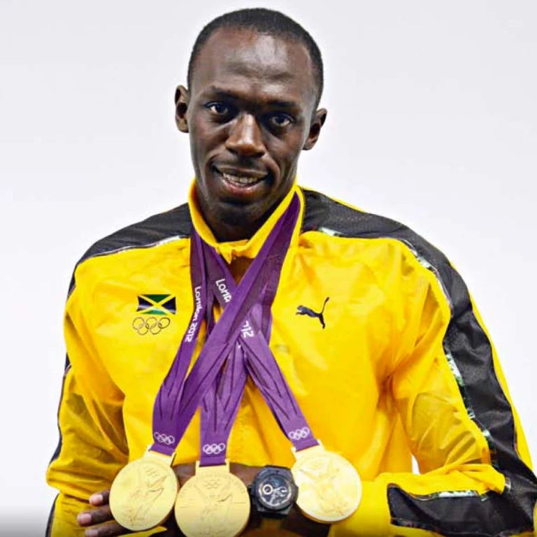

Sportmanship Award

World Record Holder

Fastest man in the World
Usain St. Leo Bolt was born on August 21st, 1986 in Trelawny, Jamaica. He grew up loving and appreciating sports and was always thinking about them. In high school, he decided to shift his focus from cricket to track and field. He captured numerous championships, gold medals, and world records at the junior track and field level which caught the attention of the rest of the world.
Usain Bolt's career is defined by his performances at the Olympics. At the Beijing 2008 Olympics, he broke his previous world best time in the 100m with a time of 9.69 seconds as well as broke the 200m world record with a time of 19.30 seconds. He is the only athlete to win the Olympic gold medal in the 100m and 200m sprints in three consecutive Olympic games..
Usain Bolt currently holds the world records for men's 100m, 200m sprints and was part of the 4x100m world record-holding Jamaican quartet that included Nesta Carter, Michael Frater and Yohan Blake.
On August 16, 2009, under the lights of Berlin's Olympic Stadium at the World Championships, 22-year-old Usain Bolt strikes a lightning-bolt pose and grins before taking his mark. Then the Jamaican, already the fastest man in the world, shatters his own world record in the 100-meter dash, winning the event in 9.58 seconds. He becomes the first to run the event in less than 9.6 seconds.
To train for 100m-200m sprint races, Usain Bolt divides the speed into five phases involving the following drills: Starting Blocks: Example workout: 10x2 point start for 10-20 m (rest: 2mins), 6x3 point start for 10-20 m (rest: 3mins), 4x2 block starts for 10-30 m (rest: 5mins) Acceleration: Example Workout: 10x20 m with weight vest (4mins recovery), 5x15 m 2-point start using weight sleds (5mins recovery) Top End Speed: Example Workout: 5x30 m acceleration, 75 percent speed for 15-20 m, sprint for 10-15 m (rest: 4-5mins) Deceleration: Example Workout: 2x100 m (2-3 reps), 95 percent of 200m pace (rest: 2-3mins between reps, 5-8mins between sets) Speed Endurance: Example Workout: 6-8x150m, 80-90% of 200m pace (rest: 3-4mins).
Sportmanship Award
World Record Holder
Fastest man in the World